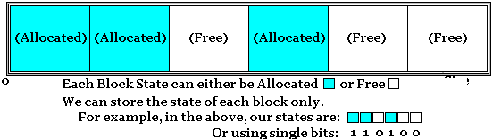

| Operating Systems Development Series | |
ようこそ!
前章では、タスクがカーネルモードプロセスとして動作するマルチタスクオペレーティングシステムを構築しました。このシリーズでは、もっと早く紹介すべきトピックを避けてきました。 また 、ページスワップ、 再帰的ページディレクトリ、アドレス空間管理など、他のトピックに ついて も甘く見てきました。 適切なメモリアロケータが あれば、カーネルヒープを実装 することができます。うまく設計すれば、物理メモリマネージャをさらに拡張して、ページ割り当てやゾーン割り当てを改善することも可能です。仮想メモリに関するトピックも同様に重要です。 現在の仮想メモリマネージャ には大きな問題があり、ID マッピングを削除すればすぐにその 問題が明らかになります。この問題は、後で 再帰的ページディレクトリを導入するときに対処 します。 最後に、プロセスの 仮想アドレス
空間とワーキングセットリストを管理する素晴らしい方法が必要 です。
これらによって、必要なものを適切にマッピングし、マルチスレッドのユーザモードタスクをサポートできるようになります。
まず、割り当て技術に飛び込みます。そのうちのいくつかは以前にも紹介しましたが、ここでは少し違った形でプリセットします。線形アロケータ、フリーリスト、フリースタック、
ビットマップなどです。 次に、より高度なアロケータである
バディアロケータとスラブアロケータを見ていきます。
スラブアロケータは
この章で紹介するアロケータの中で最も複雑な
ものです。
そして
、アロケータの設計に入り、カーネルヒーププールの構築
、物理ページの割り当て、仮想ページの割り当て、そしてすべてがどのように連動して
いるかについて見て いきます。
次の章では
、ページスワップ、ページファイル、再帰的ページディレクトリ、
アドレス空間構造など、アドレス空間管理の問題に飛び込みます
。
最初に紹介するのは線形アロケータです。
これは実装するのが最も簡単なアロケータです。割り当てが非常に速く、一定時間で実行されます。これは、割り当てられた個々のブロックの解放をサポートしていません。その代わり、バッファ全体を使い終わったら、バッファ全体が解放されます。
例えば、startがバッファの先頭を、endがバッファの最後を指しているとします。さらに、Current Offsetにはバッファの開始点からの現在のバイトオフセットが格納されるとします。このバッファからnバイトを確保したい場合、必要なことは、現在の位置へのポインタを返し、Current Offset += nを更新することだけです。
コードに置き換えると、次のようになる。
uint8_t* _currentOffset; void* _memoryEnd; void* _memoryStart; void* alloc(size_t size, align_t align) { void* memory; if (_currentOffset >= _memoryEnd) return NULL; _currentOffset = alignup( currentOffset,align); memory = _currentOffset; _currentOffset += size; }
フリーリストは、メモリの空きブロックのリンクリストである。通常、メモリはnバイトの偶数サイズのブロックに分割されます。そして、バッファの中にあるこれらの空きブロックからなるリンクリストを構築することができます。ブロックが空いていれば、そのブロックはリストに含まれます。空きブロックがあれば、そのブロックはリストに入ります。
そこで、フリーリストに含まれるどのようなタイプのブロックにも対応できるリンクリストが必要です。ブロックの中のデータについては、私たちは知りませんし、気にしません。しかし、リストポインタを何らかの方法で保存する必要があります。そこで、次のように新しい構造体LIST_ENTRYを導入することにします。
typedef struct _LIST_ENTRY {
struct LIST_ENTRY* next;
struct LIST_ENTRY* prev;
}LIST_ENTRY;
LIST_ENTRY
を使用すると、リンクリストを構築するのに必要なフォワードリンクとバックリンクを好きな場所に保存できます。リンクされたリストだけを維持することができるのです。
しかし、上記のデータ構造には興味深い性質があります。もし、これをある構造体の中で使うとしたら、LIST_ENTRYポインタと親構造体のLIST_ENTRYのアドレスがあれば、その構造体を得ることができるのです。例えば
typedef struct _FOO {
int data1;
int data2;
LIST_ENTRY listEntry;
int data3;
}FOO;
FOO bar;
そうすると、&barからFOOオブジェクトのベース位置がわかります。また、&bar->listEntryもわかっています。また、bar->listEntryのオフセットもわかっています。オフセットは、&((FOO*)0)->listEntryです。つまり、&bar->listEntry - &((FOO*)0)->listEntryは、親構造体FOOの先頭を指しているのです。このようにCONTAINING_RECORDとOFFSETOFマクロは動作します。CONTAINING_RECORDを
使えば、LIST_ENTRYの
親構造 体を取得することができます。
さて、フリーリストは、メモリ内のフリーブロックのリンクリストに過ぎないのですね。次の図で説明します。
フリー・リストに関する興味深い問題は、LIST_ENTRY自体をどこにどのように割り当てるかということです。最初は、これは鶏と卵の問題のように見えます。しかし、フリーリストを使用して既知のフリーブロックをリンクするだけなので、同じフリーブロックを使用してLIST_ENTRYを格納すればよいのです。この章のすべての図では、LIST_ENTRYを緑色の四角形で表しています。 上の図では、フリーブロック内に格納されたLIST_ENTRY オブジェクトを指す次ポインタだけを持つリンクリストを 1 つ用意しています。
物事を簡単にするために、LIST_ENTRYをすべてのフリーブロックの最初に格納すると便利です。すべてのブロックは同じサイズなので、ブロックが完全に使用されていない場合、内部で断片化が発生する可能性があります。しかし、ブロックの割り当てと解放は非常に高速で、定数時間O(1)で実行されます。
設定
メモリバッファとそれへのポインタが必要 です。例えば、512バイトのバッファを作成して、各32バイトの割り当てブロックを格納することにしましょう。 この章の例では、メモリブロックを割り当てるために_aligned_mallocを呼び出すので、返されるメモリは常にページアライメントされます。デバッグを容易にするために、アロケーターをユーザーモードでビルドすることをお勧めします。後で_aligned_mallocの呼び出しを
あなた自身の alloc_pages
関数に 置き換えるだけでいいのです。この関数は空いている物理ページを割り当てて、それをアドレス空間にマップする必要があります。また 、ヒープアロケータとして使用する予定があれば、free_listをヒープストアを指すように設定するだけでも かまいません。どのような場合でも、私たちは作業するために空きメモリが必要です。
void* free_list = _aligned_malloc (512, PAGE_SIZE); const int allocation_block_size = 32;
次に、フリーリストを初期化する必要があります。この例では、各ブロックは 32 バイトなので、単純に 32 バイトごとに LIST_ENTRY を挿入してフリーリストを作成することを思い出してください。各エントリーの link->next が次の LIST_ENTRY を指すように設定されていることに注意してください。
LIST_ENTRY* link;
uint8_t* block = (uint8_t*)free_list;
for (int i = 0; i < allocation_block_size - 1; i++) {
link = (LIST_ENTRY*) block;
link->next = (LIST_ENTRY*) (block + allocation_block_size);
block += allocation_block_size;
}
/* last entry should point to NULL. */
link = (LIST_ETRY*) block;
link->next = NULL;
上記のコードでは、フリーリストを作成しています。各 LIST_ENTRY
は各アロケーションブロックのちょうど最初に位置していることに注意してください（この例では、各アロケーションユニットは
32 バイトです）。リンクリストを格納するために、空きアロケーションユニット自体を使用します。
アロケーション
フリーリストからブロックを削除します。最後に、ブロックを返します。
void* alloc () {
void* allocation_unit;
LIST_ENTRY* link;
/* this is the first free allocation unit. */
allocation_unit = free_list;
link = (LIST_ENTRY*) free_list;
free_list = link->next;
return allocation_unit;
}
注意すべきは、LIST_ENTRYを各アロケーションユニットの最初に保存していることです。代わりにアロケーションユニットの最後か、中間のどこかに格納できない理由はありません。フリーリストをどのように構成するかによって、コードは若干異なってきます。しかし、重要なのは一貫性を保つことです。また、このallocには size
パラメータがないことにお気づきかもしれません。返されるアロケーションユニットはすべて同じサイズなので、これは不要と判断しました。
ブロックへのポインタが与えられたら、単純にそれをフリーリストに再挿入してください。
void free (void* memory) {
void* allocation_unit;
LIST_ENTRY* link;
allocation_unit = memory;
link = (LIST_ENTRY*) allocation_unit;
link->next = (LIST_ENTRY*) free_list;
free_list = allocation_unit;
}
空きリストのすべてのアロケーションユニットは、まあ空いているので、メモリブロックを空きリストに挿入し直すことで、効果的に再アロケーションできるようになりました。メモリが空いたので、ブロックの先頭に新しい
LIST_ENTRY を挿入し、それを使って空きリストに戻すことができます。
CONTAINING_RECORDとLIST_ENTRYの親構造体を使用して、格納したい情報を拡張することができます。例えば
typedef struct _BUFCTRL {
int magic;
int extra_information;
LIST_ENTERY link;
}BUFCTRL;
このような構造を各アロケーションユニットの最後に追加することで、バッファオーバーランや内部メモリ構造の破損を検出することができます。 これはカーネルレベルのコードにおいて非常に重要です。なぜなら、カーネルコードのバグが壊滅的になるずっと前に検出する必要があるためです。
フリースタックはフリーリストと非常によく似ています。実際、フリーリストを使って実装することができます。唯一の違いはインターフェースです。フリーリストを実装するだけですが、allocとfreeは少し違った書き方をします。allocate はスタックからアイテムを popping するのと同じで、free はアイテムをスタックに push back するのと同じです。フリースタックはフリーリストとして実装されているので、スタックから項目をポップするにはリストの最初の要素を削除するだけでよく、スタックに項目をプッシュするにはリストに項目を挿入するだけでよいのです。
フリーリストとフリースタックは、より高度なアロケータで多く使用され、より複雑なコードの中でこれらのタイプのメソッドをインライン化したコードを見つけることができるかもしれません。そのため、なぜフリーリストが使われるのか、どのように動作するのか、その背後にある理論を理解することは、より複雑なコードでそれらを認識できるようにするために、より役に立ちます。
物理メモリアロケータとしてのフリーリストとフリースタック
フリースタックは、物理メモリアロケータとして非常に有効です。ページングを有効にすると、任意の物理ページを仮想アドレス空間の任意の場所にマップすることができます。物理ページの実際の位置は、ほとんどの場合、重要ではありません。連続したメモリが必要な場合でも、任意のページを取得し、後でアドレス空間に連続的にマッピングすることができます。ページの実際の位置は重要ではないので、フリースタックとフリーリストは、各割当単位が1ページである物理ページを割り当てるための非常に高速で効率的な方法となりえます。もちろん、これはより高度な設計において、いくつかの問題を引き起こすかもしれません。たとえば、異なるページサイズ（4096
バイトだけではありません）をサポートしたい場合や、連続した物理メモリを必要とするハードウェアを扱いたい場合などです。これについては、後のセクションで説明するゾーンを導入することで対応できます。
また、フリーリストやフリースタックの LIST_ENTRY
を直接フリーな物理ページに格納するため、ページングをサポートする設計では興味深い問題が発生することに注意してください。つまり、上記のコードサンプルのように、単純にメモリに書き込んだり、メモリから読み出したりすることができません。まずアドレス空間にマッピングされる必要があります。このため、allocと
freeのコードは若干複雑になります。
void* alloc () {
void* allocation_unit;
LIST_ENTRY* link;
/* this is the first free allocation unit. */
allocation_unit = free_list;
/* map it into address space. */
allocation_unit = map (allocation_unit);
link = (LIST_ENTRY*) free_list;
free_list = link->next;
return allocation_unit;
}
void free (void* memory) {
void* allocation_unit;
LIST_ENTRY* link;
/* this becomes the top of our stack. */
allocation_unit = memory;
link = (LIST_ENTRY*) allocation_unit;
link->next = (LIST_ENTRY*) free_list;
/* unmap page. */
unmap (allocation_unit);
/* store physical address and unmap it. */
free_list = get_physical_address (allocation_unit);
}
上記の例では、allocはfree_list
から物理アドレスを取得します。これはリスト内の最初のアロケーションユニットであり、私たちが返したいものです。しかし、まず
free_list を更新して次のエントリを指すようにする必要があります。つまり、(LIST_ENTRY*)allocation_unit
を取得する必要があるのです。しかし、これは仮想アドレスではなく物理アドレスなので、まずmapを呼び出してアドレス空間にマッピングする必要があります。マッピングすると、allocation_unitが目的のページの仮想アドレスを指すので、そこからlink->nextを読むことができるようになりました。そして、今マップしたページの仮想アドレスを返しました。
解放するには、メモリが仮想アドレスであることに注意してください。すでにマップされているので、上でやったように、そのページに新しいLIST_ENTRYを書き込めばいいのです。なお、free_listにはすでに物理アドレスが格納されているので、link->nextの行は問題ない。しかし、メモリの物理アドレス（仮想ではなく）を指すようにfree_listを更新する必要があります。そこで、新しい関数get_physical_address
を呼び出して、物理アドレスを取得します。これで、メモリページが不要になったので、マッピングを解除することができます。
get_physical_address関数は、仮想アドレスからページテーブルインデックスとディレクトリテーブルインデックスを取得し（仮想アドレスフォーマットを思い出してください）、ページテーブルを調べて ページテーブルエントリ（PTE）->フレーム
フィールドを見つけ、これがマップされた物理アドレス となります。関数mapと unmapは、単に物理アドレスをマップしたりアンマップしたりするだけです。
ビットマップは1ビットの配列で、各ビットはそれぞれのアロケーションユニットの状態を表しています。アロケーションユニットは使用中（割り当て済み）か空き状態のどちらかです。この 2 つの状態を考えると、1 つのビットを使ってアロケーションユニットの状態を表すことができます。物理メモリ管理の章で初めてビットマップを紹介しましたが、ビットマップはフリーリストやフリースタックと同様、多くの高度なアロケーターの基本的な部分となっています。

セットアップ
ビットマップは、ビットマップ自体を格納するための追加スペースが必要です。また、アロケーションユニットを格納するためのメモリも必要です。
ビットマップは空きメモリ領域内に格納することもできますが、領域を確保する際には注意が必要です。このサンプルコードでは、__aligned_malloc
を再度呼び出して、ページアラインされた空きメモリを確保し、そのページ全体を空きメモリとして使用します。そして、ページ全体を空きメモリとして使用します。
void* memory_start = __aligned_malloc(PAGE_SIZE,PAGE_SIZE);
アロケーションするには、ビットマップの全ビットをスキャンして、フリーのアロケーションユニットを見つけ、それを返します。スキャンを行うため、この処理の最悪値は
O(n) であり、フリーリストやフリースタックよりはるかに遅くなります。
void* alloc() {
index_t bit;
for (bit = 0; bit < allocation_unit_count; n++)
if (bit_test (bit) == 0)
break;
if (bit == allocation_unit_count)
return NULL;
return (void*) (mamory_start + (bit * sizeof (allocation_unit)));
}
上記では、ビットマップ内のすべてのビットをループしています。bit_testを呼び出し、ビットマップ内のビットの値を返します。もしそれが0であれば、空きアロケーションユニットを見つけたことになります。何も見つからなければ、NULL
を返します。もし見つかったら、bitmap [bit] == 1 で、bit はビットマップのビット番号です。
これはアロケーションユニットの番号でもあります。つまり、アロケーションユニットはmemory_start + (bit * sizeof(allocation_unit)) の位置にあることになります。
解放するには、単純にアロケーションユニットの状態を表すビットを設定します。
void free(void* memory) {
index_t bit;
bit = size_of_memory / sizeof(allocation_unit).
set_bit (bit);
}
ビットマップの興味深い点は、フリーリストやフリースタックと異なり、同じポインタが複数回フリーになったことを検出できることです。 必要なのは、ビットが既にセットされているかどうかを確認することだけです。上の例と、物理メモリマネージャの章にある完全な実装を比べてみてください。
多くのメモリ管理システムは、複数のアロケーション技術を使用しています。このようなタイプのアロケーターをハイブリッドと呼びます。例えば、バディアロケータは前のセクションで説明したビットマップか フリーリストのいずれかの技法を多用します。スラブアロケータもまた、フリーリストのリストを多用します。このセクションでは、バディアロケーターを始めとして、いくつかのハイブリッドアロケーターを取り上げます。
Buddy Allocator はこれから見ていく最初のハイブリッド・アロケータで、最もシンプルなものの一つです。どのように動作するかを見るために、まず256バイトのメモリバッファを2つで割ってみましょう。 これで128バイトの小さなバッファが2つできます。もう一度2で割ると、64バイトのバッファが4つできます。最後に、これをもう1度2で割ると、32バイトのバッファが8個できます。また、各ブロックに番号を付けます。下図をご覧ください。
ブロックを2つの小さなブロックに分割するたびに（例えば、ブロック0を分割してブロック1とブロック2を得た）、これらの小さなブロックを次のように呼びます。 きみら
を互いに交換する。そのため、例えばブロック1とブロック2が きみらブロック3、ブロック4は きみらブロック5とブロック6は きみらしかし、ブロック4と5は ノット
バディ：任意のブロックがある場合、そのブロック番号を見れば、上の図のようにバディを見つけることができます。バディを見つけることで、以下のことが可能になります。 組み合わせる
を元に戻します。つまり、例えばブロック1（128バイト）をブロック3とブロック4（ともに64バイト）に分割した場合、ブロック3とブロック4は きみらこれを知ることで、私たちは 組み合わせる
ブロック3とブロック4をブロック1に戻す。つまり、大きなブロックを2つに分割し、その2つの小さなブロックを大きなブロックに戻すことができるのです。
お気づきかもしれませんが、上記ではバッファを2分割し続けるだけでした。これによって、いくつかの興味深い性質が得られます。
1レベルあたりのブロック数 = 2階級
レベルブロックの大きさ
= 総バッファサイズ / 1レベルあたりのブロック数
ポインタのレベルのインデックス
= ポインタ / そのレベルのブロックの大きさ
例えば、レベル3のブロック数は2^3 = 8であり、同じレベルのブロックのサイズは256 / 8 =
32バイトである。最後の例では、バッファの96バイト目にポインタがあったとします。そして、96 / 32 = 3
とすれば、レベル3におけるそのポインタのインデックスを得ることができます。これは、レベル3の3番目のブロックである ブロックナイン
を上図に示します。これが何を意味するかというと レベルとポインタが与えられれば、ブロック番号を計算することができる
その相棒を探すのに必要なまた、どのレベルを使用するかも 割当サイズ例えば、ポインタが2^3バイトのブロックを指していることが分かれば、レベル3を使用することが分かる。これは、さらに次のことを意味します。 ポインタとアロケーションサイズだけで、その相棒を見つけることができます。.
しかし、このようなものを実装してアロケーションに使うにはどうしたらよいでしょうか。メモリバッファのように見るのではなく、フリーリストのリストとして見てみましょう。
次の図のように、各レベルに1つずつフリーリストがあります。これらはフリーリストなので、フリーブロックだけをリンクすることになることを思い出してください。
このように空きリストを利用することで、割り当てを大幅に簡略化することができます。上図は、256バイトのブロックがなくなり、128バイトのブロックが1つ、2^nバイトのブロックが2つ空いている状態を示しています。新しい128バイトブロックを割り当てる場合は、レベル1から1つ削除すればよい。2^n
バイトのブロックを解放したい場合は、レベル n
のリストに追加するだけです。これらは空きリストなので、LIST_ENTRYを空きブロック自体に直接格納することができます。
セットアップ
まず、いくつかのマクロを定義してみましょう。これらは、先に説明した基本的なプロパティを実装したものです。
#define MAX_LEVELS 32 /* 2^32 = 4GB. */
#define BLOCKS_PER_LEVEL(level) (1<<(level))
#define SIZE_OF_BLOCKS_AT_LEVEL(level,total_size) ((total_size) / (1<<(level))
#define INDEX_OF_POINTER_IN_LEVEL(pointer,level,total_size) \
((pointer) / (SIZE_OF_BLOCKS_AT_LEVEL(level,total_size)))
マクロ INDEX_OF_POINTER_IN_LEVEL は完全では ありません。実際に渡す必要のあるポインタは、メモリバッファの先頭からの相対的なものでなければなりません。 つまり、計算の内部でポインタ - memory_startを使用 する必要があるため、マクロは次のようになります。
/* Corrected. */
#define INDEX_OF_POINTER_IN_LEVEL(pointer,level,memory_start,total_size) \
(((pointer)-(memory_start)) / (SIZE_OF_BLOCKS_AT_LEVEL(level,total_size)))
このマクロは少し複雑ですが、前節の最初の計算と比較すると、Pointer / LevelのBlockのサイズに過ぎません。 これは後々freeするときに非常に重要に
なります。
また、作業用のメモリバッファも必要です。他の例と同様に
、__aligned_mallocを呼び出します 。 これにより、ページアラインされた PAGE_SIZE バッファが得られます。
void* memory_start = __aligned_malloc(PAGE_SIZE,PAGE_SIZE);
物理メモリの割り当てにバディアロケータを使用する場合、memory_startは 0 (メモリのベース) かメモリゾーンの先頭 (これについては後で説明します) のどちらかになるでしょう。ROM、デバイスRAM、メモリホールなどは含まれないでしょう。最後に、フリーリストが必要です。
void* free_lists[MAX_LEVELS];
物理メモリマネージャの場合、メモリマップをスキャンして空きリストを作成する必要があります。上の例では、PAGE_SIZEバイトの空きメモリ領域が 1 つしかないので、1 つのエントリを設定するだけでよいのです。
void setup() { LIST_ENTRY* link; index_t i; for(i = 0; i < MAX_LEVELS; i++) InitializeListHead(&free_lists[i]); link = (LIST_ENTRY*)memory_start; InitializeListHead(link); InsertTailList(&free_lists[0], link); }
まず、すべてのフリーリストをループして初期化します。 次に
、memory_startに
LIST_ENTRYを書き込みます。 これは、以前にフリーリストを導入したときと同じトリックで、
LIST_ENTRY を 各ブロックの先頭に直接書き込むのです。これで
free_lists[0]はmemory_start
の
先頭にある1 つの
LIST_ENTRYを指します。
free_lists[0]は特別 です。これまで紹介した図ではすべてレベル0です。
レベル0の図には共通点があり、 ブロックサイズはバッファサイズ全体です。 上記の例では 、PAGE_SIZEバイトの バッファを割り当てたので 、free_lists[0]はPAGE_SIZEバイトの 1つのフリーブロックを指します 。つまり 、PAGE_SIZEのブロックが1つだけ空いていて、 他には 何もないということです。これは 正しいです。まだ何も割り当てていないので 、PAGE_SIZEブロックの空きメモリがあるのです!
割り当て
さて、このアイデアは、必要な最大の割り当てサイズが見つかるまで、ブロックを 2 で分割し続けるというものです。例えば、32
バイトを割り当てる必要があるとします。これは2^4なので、レベル4-1=3から32バイトのブロックを取得する必要があります（レベル0から開始したことを思い出してください）。したがって、割り当て関数はバッファを取得し、32バイトのブロックが得られるまで2で割る必要があります。また、256バイトのメモリバッファを想定してみましょう。次の図を見てください。
上図では、バッファから最初の32バイトのブロックを割り当てています。そのために、256バイトのバッファを2つの128バイトのブロックに分割しました。次に、最初の128バイトのブロックを2つの小さな64バイトのブロックに分割します。そして、最初の64バイトのブロックを2つの32バイトのブロックに分割します。ブロック1と2はバディ、ブロック3と4はバディ、ブロック7と8はバディであることに注意してください。分割されたブロックはグレーで表示しています。そして、ブロック7が割り当て関数から返されます。
しかし、これらの分割は
同じ
256バイトのバッファ上で行われて いることに留意してください。上の図は、バッファがどのように分割されるかを可視化したに過ぎません。実際のバッファは下図のようになります。
この2つの画像を比較して、アルゴリズムがどのようにバッファを分割しているかを見てみましょう。最初の
32 バイトのブロック (ブロック 7)
が割り当てられていることに注目してください。ブロック3を分割したため、32バイトのブロック(ブロック8)が余ってしまいました。ブロック1を分割したため、64バイトのブロック（ブロック4）が余ってしまいました。そして、ブロック0を分割したため、128バイトのブロックが余ってしまいました。これらの余ったブロックは、次にメモリを確保する必要があるときに使えるように、空きブロックになっています。このことを反映したのが、以下のフリーリストです。
出来上がったフリーリストを先の2つの図と比較してみてください。256バイトのブロックはもうないので、最初のリストは空です。
しかし、64バイトのブロックと32バイトのブロックが1つずつ確保されています。後で32バイトブロックをもう1つ割り当てるなら、ブロック8を取ればよいのです。64バイトブロックを2つ割り当てる必要がある場合は、ブロック4を割り当て、ブロック2をブロック5とブロック6に分割してブロック5を返せばよい（これらのブロックはセクション冒頭の図に示されている）。
分割操作は再帰的なので、このようにアルゴリズムを書くことができるのです。では、まず次のようにします。
void* alloc(size_t size) {
index_t level = get_level(size);
return _alloc(level);
}
ここで、get_levelは、サイズが与えられた場合、ゼロベースのレベル番号を返すだけである。つまり、サイズが32バイトの場合、256/2/2
= 32なので、レベルは3です。次に、再帰的関数となる_allocを呼び出します。
void* _alloc(index_t level) {
void* memory;
LIST_ENTRY* left;
LIST_ENTRY* right;
LIST_ENTRY* link;
if (IsListEmpty(&free_lists[level]) {
}
link = RemoveHeadList(&free_lists[level]);
memory = (void*) link;
return memory;
}
そこで、そのレベルの空きリストに何かが入っていることを確認します。もしそのレベルにあれば、単純にその空きリストから割り当てればいいのです。もしそれが空であれば、もう少しやることがあります。このレベルの空きリストに新しいブロックを追加して、その中に何かがあるようにする必要があります。しかし、このブロックはどこから来るのでしょうか？上の空きリストの図を見てください。
例えば、「32バイトブロック」が必要なのに、「32バイトブロックの空きリスト」は空っぽだとしましょう。この32バイトのブロックは、より大きなブロックを分割して作ったものです。もし、もっと下の階層（例えば、"64バイトブロックの空きリスト"）から大きなブロックをつかむことができれば、そのブロックを
"32バイトブロックの空きリスト
"で2つの新しいブロックに分割することができる。そして、それをやろうとしたときに
"64バイトブロック空きリスト "も空だった場合は、"128バイトブロック
"を試して、それを分割すればいいのです。このように、2つに分割できるブロックが得られるまで、必要に応じてどんどん上位の階層に進んでいくことができます。これが再帰的ステップです。
再度_allocを呼び出すことで、下位レベルのフリーリストからより大きなブロックを割り当てることができます。それが成功したら、2つを追加することで2つのブロックに分割し、両方をリストに挿入し直せばよいのです。最終的なコードは以下の通りです。
void* _alloc(index_t level) {
uint8_t* memory;
LIST_ENTRY* left;
LIST_ENTRY* right;
LIST_ENTRY* link;
if (IsListEmpty(&free_lists[level]) {
size_t size;
memory = _alloc(level-1);
if (!memory)
return NULL; /* out of memory. */
/* recall that entire memory size was PAGE_SIZE. In the figures,
we used a memory buffer of 512 bytes to keep them small. */
size = SIZE_OF_BLOCKS_AT_LEVEL(level,PAGE_SIZE);
/* now we split this block into two. */
left = (LIST_ENTRY*) memory;
right = (LIST_ENTRY*) (memory+size);
/* initialize them. */
InitializeListHead(left);
InitializeListHead(right);
/* insert the two new blocks. */
InsertTailList(&free_lists[level], left);
InsertTailList(&free_lists[level], right);
}
link = RemoveHeadList(&free_lists[level]);
memory = (uint8_t*) link;
return (void*) memory;
}
Freeing
ポインタとサイズが与えられたら、上でやったように始めることができます。
void free(void* memory, size_t size) {
index_t level = get_level(size);
return _free(memory, level);
}
これは、 この操作が 再帰的であるためです。
ブロックを2つに分割して いるところを思い出してください。同じように2つのブロックが空いているときに、その2つのブロックを組み合わせて、より大きなブロックにすることが できます。そして、その大きなブロックをさらに大きなブロックに結合する、というように。これが再帰的なステップです。例えば、ブロック7とブロック8を組み合わせてブロック3に戻すことができます。
フリー化はアロケートより少し複雑なので、このように始めてみましょう。
void _free(void* memory, index_t level) { LIST_ENTRY* link; size_t size = size_from_level(level); link = (LIST_ENTRY*) memory; InitializeListHead(link); InsertTailList(&free_lists[level], link); }
これは良いスタートです。メモリにLIST_ENTRYを追加し、空きリストに戻すことができるようにしました。しかし、どのようにブロックを結合するのでしょうか？このブロック バディを見つける必要があります。 この方法は、ブロックインデックス番号を見ることであることを思い出してください。
今のコードは次のようになります。
void _free(void* memory, index_t level) { LIST_ENTRY* link; index_t index; addr_t buddy; size_t size = size_from_level(level); index = INDEX_OF_POINTER_IN_LEVEL(memory,memory_start,PAGE_SIZE); if (index & 1) == 0) buddy = (addr_t) memory + size; else buddy = (addr_t) memory � size; link = (LIST_ENTRY*) memory; InitializeListHead(link); InsertTailList(&free_lists[level], link); }
さて、バディが見つかったので、それがまたフリーかどうかをチェックする必要があります。もしまだ割り当てられているのなら、それらを1つの大きな空きブロックとして結合することはできません。これらのブロックはバディなので、同じサイズと同じ空きリストレベルを持っています。 そこで、free_list [level]で空きリストを スキャンして buddyを見つけることで、すぐに確認 できます。 これでコードは次のようになります。
void _free(void* memory, index_t level) { LIST_ENTRY* link; LIST_ENTRY* buddy_link; index_t index; addr_t buddy; size_t size = size_from_level(level); index = INDEX_OF_POINTER_IN_LEVEL(memory,memory_start,PAGE_SIZE); if (index & 1) == 0) buddy = (addr_t) memory + size; else buddy = (addr_t) memory � size; buddy_link = NULL; if (! ListEmpty(&free_lists[level])) buddy_link = free_list_find(buddy); link = (LIST_ENTRY*) memory; InitializeListHead(link); InsertTailList(&free_lists[level], link); if ( buddy_link == buddy) { /* both blocks are on free list. */ } }
それでは、実際にブロックをマージしてみましょう。 これは、現在のブロックとバディを free_list [leve]の現在のリストから削除 し、それをfree_list [level-1] に 1つのフリーブロックとして挿入することによって行わ れます。しかし、この大きなブロックも同様に解放できるかもしれません、まだ分かっていません。そこで、ブロックを挿入するだけでなく、これ以上解放できなくなるまで、より大きなブロックを再帰的に解放しようとします。以下は最終的なコードです。
void _free(void* memory, index_t level) { LIST_ENTRY* link; LIST_ENTRY* buddy_link; index_t index; addr_t buddy; size_t size = size_from_level(level); index = INDEX_OF_POINTER_IN_LEVEL(memory,memory_start,PAGE_SIZE); if (index & 1) == 0) buddy = (addr_t) memory + size; else buddy = (addr_t) memory � size; buddy_link = NULL; if (! ListEmpty(&free_lists[level])) buddy_link = free_list_find(buddy); link = (LIST_ENTRY*) memory; InitializeListHead(link); InsertTailList(&free_lists[level], link); if ( buddy_link == buddy) { RemoveListEntry(link); RemoveListEntry(buddy_link); if (index & 1) == 0) _free(link, level - 1); else _free(buddy_link, level - 1); } }
フリーリストの代わりにビットマップを使用
バディアロケータの実装に、フリーリストの代わりにビットマップを使うことは確かに可能です。フリーリストは「空いている」ブロックしか提供しないので、それを「0」、あるレベルの他のブロックを「使用中」とマークして「1」を与えることができるのです。各レベルは、そのレベルにあるすべてのブロックの状態を示す独自のビットマップを持つことになります。コードは若干単純化されますが、割り当てや解放の際に若干の性能劣化が発生します。ビットマップを使って上記を実装する練習をしてみてください。
この最後のアロケータは、ここで紹介するアロケータの中で最も複雑なアロケータです。バディアロケータよりもさらに、フリーリストを多用します。これはカーネルオブジェクトキャッシュアロケータであり、Mach
や Linux
のようなオペレーティングシステムで使われる一般的なアロケータです。オリジナルの設計では、カーネルオブジェクトキャッシュと構築をサポートしていました。その後、マルチプロセッサシステムでの性能を向上させるためにCPUごとのキャッシュをサポートしたり、キャッシュの使用量を向上させるためにキャッシュカラーリングをサポートするように修正・更新されました。ここでは、オリジナルの設計を取り上げます。改訂された設計は、オリジナルの設計の上にもう1つ全体のレイヤーを追加し、物事をより複雑にするだけです。スラブアロケータは、設計のアーキテクチャにもよりますが、約1,000行以上となる傾向があります。このため、本文中ではプレゼンテーションのためにコードを簡略化します。
まず、必要となるデータ構造を紹介することから始めます。それらについては、次に詳しく説明します。
typedef struct _SLAB {
CACHE* cache;
LIST_ENTRY listEntry;
size_t objectCount;
size_t usedObjects;
size_t bufferSize;
union {
void* freeList;
LIST_ENTRY bufferControlFreeListHead;
}u;
}SLAB;
typedef struct _BUFCTRL {
void* buffer;
SLAB* parent;
LIST_ENTRY entry;
}BUFCTRL;
typedef struct _CACHE {
size_t size;
int align;
int flags;
SPIN_LOCK lock;
LIST_ENTRY fullSlabListHead;
LIST_ENTRY partialSlabListHead;
LIST_ENTRY emptySlabListHead;
LIST_ENTRY listEntry;
}CACHE;
もし、改訂・更新版も実装するのであれば、CPUCACHE構造体も導入していたでしょう。これらの構造は、最初は大変に見えるかもしれません（キャッシュ、リストの中のリスト、空きリストのリスト、BUFCTRLなど）。設計構造を見て、これらの構造が何のためにあるのかを理解できればと思います。
設計
やれやれ...。
標準的なmallocとfree
について一度も触れていないことにお気づきかもしれません。これまで説明したことはすべて、カーネルやユーザ空間にヒープを実装するための基礎として使うことができます。フリーリスト、ビットマップ、ブロックの結合、キャッシュなどの話題は、任意のサイズのメモリを扱う必要がある一般的なアロケータでは基本的なものです。スラブアロケータは実際のカーネルヒープアロケータの例であり、いくつかのオペレーティングシステムで使用されています。このため、スラブアロケータを取り上げることにしました。しかし、ユーザー空間のアロケータは、任意のアロケーションサイズを扱えるようにしなければなりません。一般的なアロケータには、実装時に考慮しなければならない問題点や設計上の課題があります。
もちろん、これらの汎用アルゴリズムはカーネルモードでも適用でき、単純なカーネルヒープを実装することができます。シンプルなアロケータが必要で、スラブアロケータのような複雑なものは必要ない場合は、ベストフィットや
ファーストフィットを採用する方がよいかもしれません。